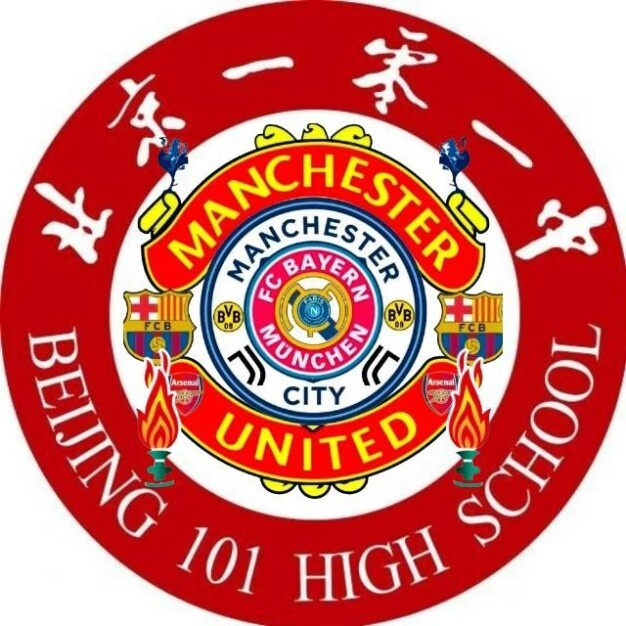

BEIJING 101 · FOOTBALL & CULTURE
从一场比赛，
读懂更大的世界。
北京101中学足球分析与跨学科社团。我们观察比赛，也观察比赛之外的人、城市、数据与文化。
BEIJING / 101

MATCH · METHOD · MEMORY
FOOTBALL · ANALYSIS · CULTURE一零一赛后情书在101，看见足球的更多可能FOOTBALL · ANALYSIS · CULTURE
THE SOCIETY
一群认真看球的
学生。
我们是北京101中学的足球社团，因对比赛、球队与球迷文化的共同兴趣相聚。社团成员支持不同的主队，来自皇马、巴萨、英超球队、德甲球队、米兰双雄，以及北京国安、山东泰山等21支主队。我们分享比赛观察、球队故事和个人观点，让不同的立场在同一片看台相遇。公众号“一零一赛后情书”记录社团里的足球故事，也欢迎每一位认真看球的人加入讨论。
160+群成员
01已收录文章
21球队档案
EUROPEAN PLAYER OF THE WEEK
欧洲每周
最佳球员
THE GAME. YOUR VERDICT.
A WEEK WORTH WATCHING
EUROPE
EUROPE
WEEKLY AWARD
THE JOURNAL
最新的
观察。
↗
WECHAT / 我们的公众号
一零一赛后情书
把对足球的热爱，写成赛后的每一封情书。
OUR COLOURS
不同主队，
同一片看台。
OPEN CALL · 101
下一篇文章，
由你开始。
我们欢迎写作者、数据爱好者、摄影师和愿意认真讨论比赛的人。